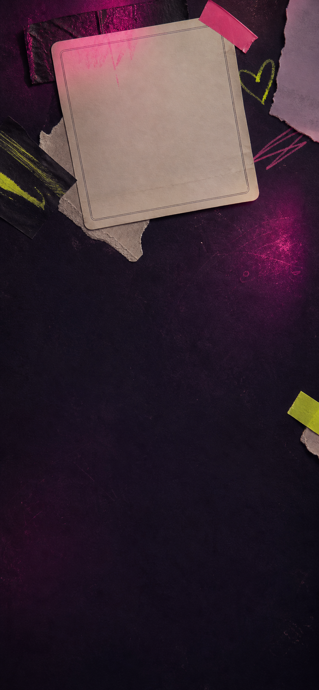
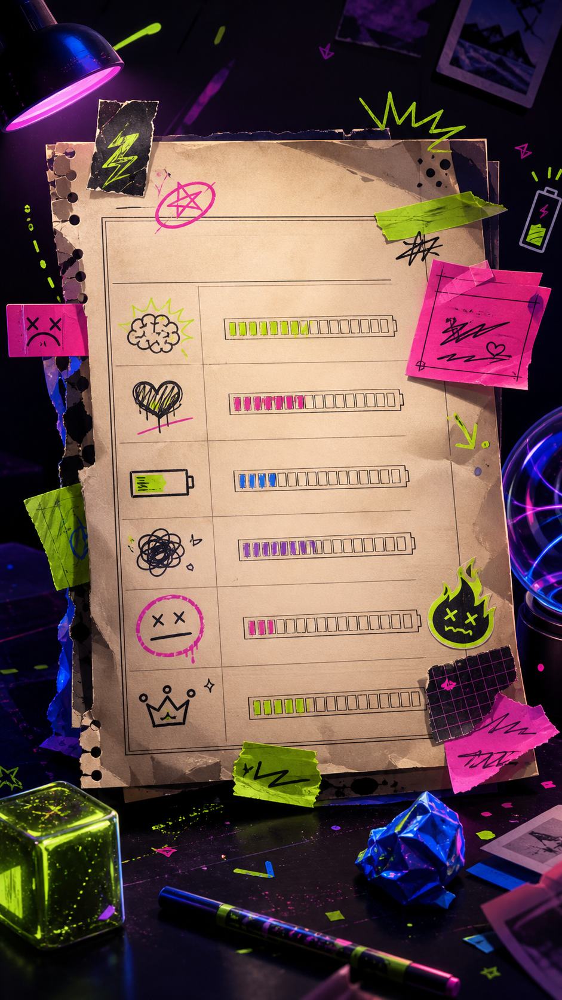
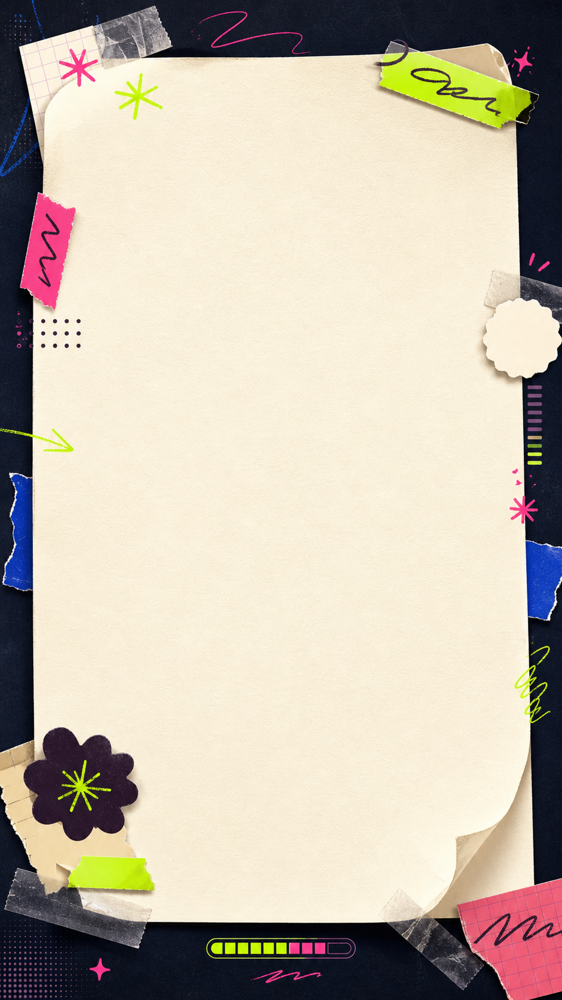
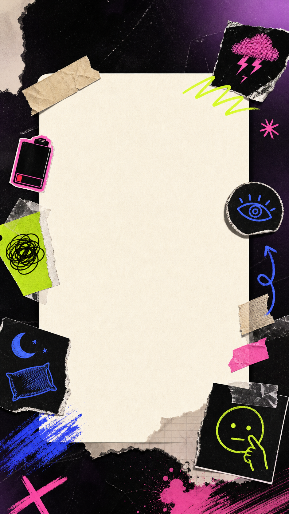
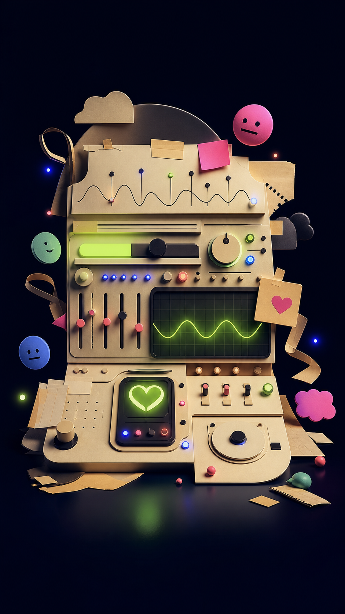
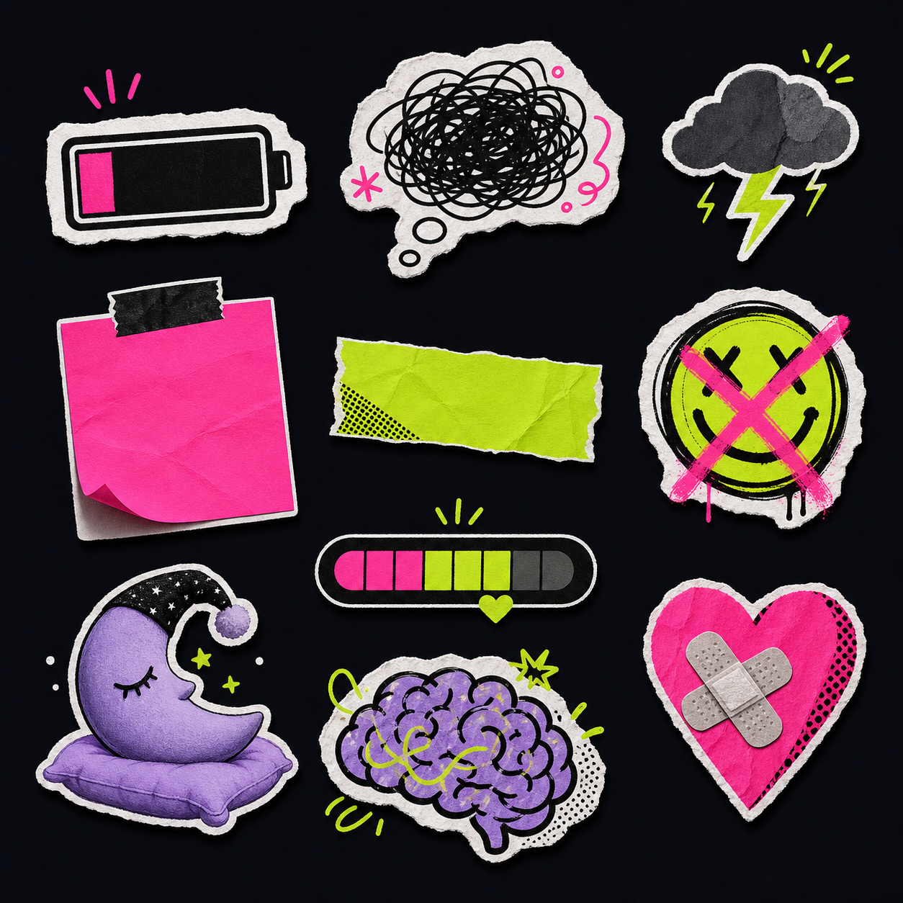

Pencil Style Approval
嘴硬日记视觉确认：深夜便利贴 + 霓虹批注
这些图是已生成的 image2 源资产。它们必须先导入 Pencil，在 `.pen` 里完成 UI 画板和裁切确认，再由 Pencil 导出 H5 运行时切图。
当前推荐：首页底板用 clean background，强视觉用 neon sticky，结果卡用 result card，分享海报用 share poster，贴纸组进入 sticker kit。
image2 源资产

首页 UI 底板
Clean Home Background
适合承载标题、输入框和 CTA，底部留白足，进入 Pencil 后作为首页主板底图。
images/source-home-bg-clean-image2.png

强主视觉
Neon Sticky Report
质感最强，适合作为首页上半屏或活动视觉；进入 Pencil 后要检查 H5 前景文字安全区。
images/source-hero-neon-sticky-image2.png

结果卡底图
Result Card Background
中心纸面区域较干净，适合叠加今日称号、能量条和报告文案。
images/source-result-card-bg-image2.png

分享海报
Share Poster Blank
中间留白大，适合做朋友圈或群聊保存图，需要在 Pencil 里保留报告文字区域。
images/source-share-poster-image2.png

备用品牌资产
Status Dashboard
更偏可爱科技感，适合作为 App 延展或空状态，不作为首版主视觉。
images/source-status-dashboard-image2.png

贴纸组
Sticker Sheet
导入 Pencil 后作为素材板，可后续切分单个贴纸，也可以导出整张贴纸组。
images/source-sticker-sheet-image2.png
Pencil 导出目标
h5/assets/visuals/pencil-export/hero-report-collage.png
01 Home Hero Direction / 941 x 1672 / required / temporary_preview
h5/assets/visuals/pencil-export/share-poster-bg.png
03 Share Poster / 941 x 1672 / required / temporary_preview
h5/assets/visuals/pencil-export/report-stickers.png
04 Sticker Kit / 1254 x 1254 / optional_future / pending
确认问题
这个方向是否成立：深夜便利贴 + 霓虹批注？
整体是否太暗，或者太像心理咨询产品？
发疯感是否足够，但不压抑？
首页主视觉是否一眼能看懂生成报告？
结果卡是否值得保存或分享？
确认后动作
npm run style:approval-draft -- --by=YOUR_NAME --notes="Confirmed from Pencil boards." npm run verify:style-approval-draft node tools/apply-style-approval-draft.js --yes npm run pencil:register-exports npm run verify:assets:final